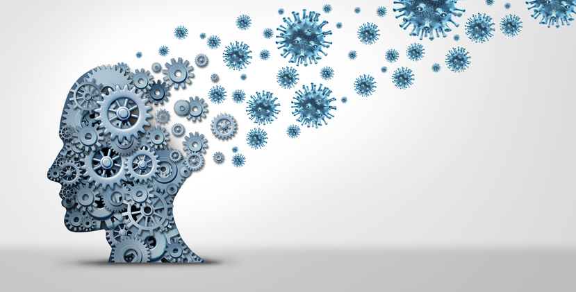

1-La definition de la sante mental
La santé mentale définit le bien-être psychique, émotionnel et cognitif ou une absence de trouble mental. |
 |
Les pays européens (Commission Européenne de l’Union européenne et la Conférence ministérielle européenne de l’OMS5) distinguent deux aspects de la santé mentale : la santé mentale « positive » (autonomie, bien-être, épanouissement personnel), et la santé mentale « négative » qui regroupe deux formes : d'une part la détresse psychologique réactionnelle (induite par les situations éprouvantes et difficultés existentielles), d'autre part les troubles mentaux, affections psychiatriques de durée variable et plus ou moins sévères et/ou handicapants6.
L'Organisation mondiale de la santé promeut un mouvement de désinstitutionnalisation dans laquelle le soin en santé mentale classique sera remplacé majoritairement par une « santé mentale communautaire ». Celle-ci consiste à :
En 1843, William Sweetser8 est le premier auteur à utiliser le terme d'"hygiène mentale", un précurseur des futures approches de la santé mentale9.
Isaac Ray, l'un des trente fondateurs de l'Association Américaine de Psychiatrie (AAP), définit la santé mentale comme un art de préserver l'esprit contre les incidents et les influences qui pourraient endommager ou détruire son énergie, sa qualité ou son développement9.
Une figure importante de l'"hygiène mentale", est l'américaine Dorothea Dix (1808-1887), une institutrice qui a consacré toute sa vie à aider les personnes atteintes de troubles mentaux, et à faire la lumière sur les conditions déplorables dans lesquels ils étaient traités.
Ce mouvement est connu sous le nom de "mouvement d'hygiène mentale"10,11.
Au début du xxe siècle, les individus atteints de troubles mentaux étaient encore considérablement négligés, souvent laissés seuls dans des conditions déplorables, et possédant parfois à peine de quoi s'habiller10.
Les efforts de Dix ont servi et nombre de patients atteints de troubles mentaux ont été mieux pris en charge dans des hôpitaux psychiatriques d'État, même si ces institutions manquaient largement de personnel10.
En 1908, Clifford Beers fonde aux États-Unis le National Committee for Mental Hygiene et ouvre la première clinique pour patients atteints de troubles mentaux aux États-Unis9,12.
Le nouvel élan des politiques de santé mentale, impulsé dans les années 1990, va bien au-delà de ces dispositifs limités.
Avec ce terme, il s'agit en réalité d'un changement de paradigme des politiques de santé publique.
Là où autrefois le champ psychiatrique de la folie constituait le fondement et le socle légitime des interventions de l'État, la santé mentale est désormais la priorité et la fin d'un nouveau domaine illimité.
C'est que le malaise social est de plus en plus décrit et appréhendé comme un malaise subjectif : la dépression est déclarée « mal du siècle » et tout lien social peut être cause de traumatisme.
Mais c'est aussi et surtout que l'idéal de santé, conçue comme le capital-ressource nécessaire pour faire face aux aléas de la vie en société, constitue le nouveau bien démocratique. La santé mentale a ainsi été déclarée « nouveau droit de l'homme ».
L'idéal est celui de la « santé mentale positive », dont la production est posée comme préoccupation de l'État, et dont la réalisation doit être le souci de chacun
Différentes études tentent à montrer une dépendance à la malbouffe et de démontrer un lien entre santé mentale et malbouffe.
Si l’alimentation ne peut pas être considérée comme unique cause de la maladie mentale, il est par contre prouvé qu’il existe un lien entre la moindre qualité de celle-ci et ces pathologies : il est notamment établi pour la dépression, l’autisme et la schizophrénie.
Marion Leboyer, psychiatre et chercheur à l'INSERM, pense que l’impact d’un régime alimentaire déséquilibré est réel : nous savons que chez les malades, certaines règles d’hygiène de vie ne sont souvent pas respectées, que certains aliments ne sont pas assez consommés (menant à des carences en nutriments comme le zinc, la vitamine D ou B9), et que d’autres aliments sont, à l’inverse, trop consommés. De plus, nous rencontrons deux fois plus de syndromes métaboliques (obésité, hyperglycémie ou diabète, hypertension artérielle, excès de cholestérol et de triglycérides…) chez les patients avec, par exemple, un trouble bipolaire ou une schizophrénie, que dans la population générale
Un nombre important de troubles et séquelles, éventuellement irréversibles, peuvent avoir été induits in utero, dans l'enfance ou à l'âge adulte, à la suite du contact avec des neurotoxiques inhalés, ingérés, ou absorbés par la peau ou des muqueuses.
Il peut s'agir par exemple du plomb ou du mercure, ou de pesticides, d'alcool ou d'autres corps chimiques, qui parfois peuvent agir en synergies.
Il est probable que la neurotoxicité de certaines molécules n'ait pas encore été identifiée.
En Europe, le règlement Reach invite à une meilleure évaluation des impacts des produits chimiques.
Faute de recherches anciennes, et d'une approche écoépidémiologique adaptée, l'origine écotoxicologique de certains troubles a pu être sous-estimée chez des populations collectivement exposées à des toxiques d'origine naturelle ou artificielle (arsenic du sol, plomb des cartouches de chasse, plomb et radionucléides de Tchernobyl, etc.).
Des millions de personnes dans le monde sont victimes de troubles neurologiques induits par des virus ou bactéries.
C'est selon un rapport19 (2007) de l'OMS la sixième cause de consultation neurologique dans les services primaires de soin, touchant particulièrement environ un quart des états-membres de l'OMS, essentiellement en Afrique et dans le Sud-est asiatique.
Les neuroinfections restent un problème difficile à traiter même avec l'arrivée des antibiotiques et de vaccins efficaces, dans beaucoup de régions du monde, particulièrement dans des pays dites « en voie de développement ».
Ces infections ont généralement été contractées dans l'enfance voire in utero (dans une étude nord américaine20 ayant porté sur plus de 12 000 enfants, les enfants dont la mère était grippée durant la première partie de leur grossesse ont eu un risque triplé de développer une schizophrénie plus tard).
ce cas, une étude ayant porté sur plus de 2000 femmes n'ayant pas détecté d'effets de la vaccination de la mère sur le fœtus, la vaccination préventive de la femme enceinte a été recommandée par les CDC américains.
Le contexte sociopsychologique a une importance dans l'apparition de certains troubles, en particulier, dépressions pouvant conduire au suicide.
Le stress et la souffrance au travail ou le stress induit par la difficulté à trouver du travail et à la peur de le perdre, le stress lié au vieillissement dans la solitude, certaines délinquances sexuelles, divers troubles de la sexualité, la non-reconnaissance sociale ou l'interdit de certaines formes de sexualité, ou encore divers stress liés au sida, à la stérilité du couple, aux drogues dures, ou le stress induit par une grande précarité et une société où la famille a éclaté, le stress de mineurs en grande difficulté, la perte de repères des mondes virtuels offerts par les jeux vidéo, sont des problèmes parfois nouveaux pour les thérapeutes.
Dans certains pays ou contexte, le trouble mental est encore volontiers caché ou les malades enfermés, ce qui peut ajouter à leur souffrance et à leurs trouble.
Dans certains pays, les problèmes d'immigration forcée et de déplacements volontaires de réfugiés ou immigrés cherchant de meilleures conditions de vie, ou les problèmes liés aux guerres, guerres civiles et au terrorisme, ou à certaines pressions sociales et religieuses peuvent être sources de troubles importants
Cependant, certaines solutions existent pour permettre de diminuer l'apport de stress dans le monde du travail.
L'ambiance entre collègues est un facteur importants vis a vis du bien être au travail.
D'après une étude menée par Opinion way auprès des salariés français, l'ambiance au travail est plus importante que le salaire.
L'écoute, le dialogue, le management participatif, le respect et l'ouverture d'esprit favorisent une bonne ambiance au travail.
Les institutions qui visent à aider les gens ayant des problèmes de santé mentale se font rares au Québec.
Principalement, il existe deux types de ressources : les institutions publiques et les institutions privées.
Les institutions publiques sont principalement les hôpitaux où des psychiatres et psychologues travaillent pour le gouvernement22.
Les institutions privées sont des établissements où les spécialistes ont leur propre bureau et travaillent pour eux-mêmes22.
Contrairement aux institutions privées, les institutions publiques sont gratuites et accessibles à tous22.
Le système économique mis en place par le gouvernement québécois assure des services complètement gratuits, dont les impôts22.
Ainsi, la demande auprès des institutions publiques est beaucoup plus élevée en raison de son accessibilité et de sa gratuité.
Au contraire, les institutions privées sont réservées aux gens plus aisés financièrement, en raison de leur service payant.
Certains citoyens n'ont pas les moyens de se permettre des soins privés et se tournent plutôt vers les services publics.
Il est ainsi possible d'éviter de débourser pour avoir accès à des soins de santé : utiliser le service public qu'offre l'État.
Cela dit, les institutions publiques sont submergées de demande, ralentissant ainsi le processus de pouvoir consulter un professionnel de la santé.
Afin d'obtenir de l'aide pour soigner un trouble de santé mentale, il peut y avoir un temps d'attente allant jusqu'à deux ans pour voir un spécialiste au public23. Comme la demande est plus élevée en raison de la gratuité des soins, les spécialistes du secteur public ont une très grosse charge de travail versus leur capacité24. Cette charge est parfois décourageante, poussant ainsi certains professionnels à remédier à ce travail24. Dans certaines institutions publiques, des spécialistes quittent leur emploi en raison des mauvaises conditions de travail.
Principalement, les travailleurs de la santé n'ont aucun congé alloué et doivent obligatoirement faire du temps supplémentaire sous peine de congédiement.
Certains de ces spécialistes prennent la décision de quitter leur emploi en raison des mauvaises conditions de travail, augmentant ainsi davantage la charge de travail des spécialistes restant24. En raison de la charge de travail trop élevée, certains spécialistes verront la qualité de leur service diminué25. Certaines pratiques médicales en santé mentale sont qualifiées de "froides, expéditives et contraintes par le temps et l'espace".
Les services ne sont pas basés sur l'accueil et la compréhension du patient, mais sur la rapidité de la rencontre afin de soigner le plus de patients possible en peu de temps25. Également, il existe un manque d'humanité de la part des spécialistes du Québec.
Ceux-ci apposent des diagnostics trop tôt sans même avoir fait un examen complet du patient.
Aussi, les patients se disent considérés comme des numéros et ont l'impression de déranger les spécialistes lors de consultations25. Le personnel du secteur public a tendance à prescrire de la médication de façon automatisé25.
Certains patients disent ne pas avoir eu besoin de médicament afin de remédier à leur trouble de santé mentale malgré la prescription de médicaments de la part de leur psychiatre25. Plusieurs patients mentionnent avoir abandonné leur demande d'aide en raison de la longueur de l'attente auprès du service public, ainsi que l'approche utilisée par ces spécialistes
En mars 2007, un rapport de l'Organisation mondiale de la santé26 annonce un doublement des cas de démence tous les 20 ans pour les prochaines décennies.
Des désordres neurologiques et leurs séquelles et conséquences affectent environ un milliard de personnes dans le monde, touchant tous les groupes d’âge et toutes les zones géographiques.
Et pour l’OMS, ces problèmes iront en s’aggravant durant quelques décennies.
En effet, l'allongement de la vie et une diminution du nombre d’enfants par femme ont amené une transition démographique passagère, mais importante.
Durant quelques décennies, la proportion de personnes âgées et très âgées sera bien plus élevée qu’elle ne l’a jamais été dans l’Histoire de l’humanité.
Les désordres neurologiques (dont Alzheimer et autres démences, maladie de Parkinson) seront plus nombreux.
Beaucoup de pays en sous-développement doivent en outre aussi faire face à un taux élevé ou en augmentation de maladies infectieuses dont certaines ont des conséquences neurologiques (dont VIH et paludisme) et à une augmentation de maladies non contagieuses (obésité, infarctus, etc.) dont certaines séquelles peuvent affecter le système nerveux central.
Même si statistiquement les pauvres, les enfants, les adolescents et les personnes âgées présentent un risque accru, aucun groupe social ou de population n'est immunisé contre les troubles neurologiques.
Lors de certaines maladies, la douleur physique ajoute ses effets à la souffrance psychique des malades et de leur entourage. Ceci pèse sur les familles et l’entourage, et est mal mesuré, comme les impacts socio-économiques de ces maladies.